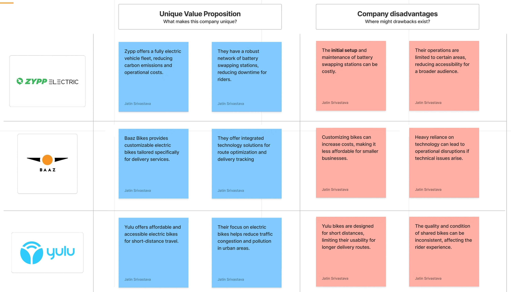
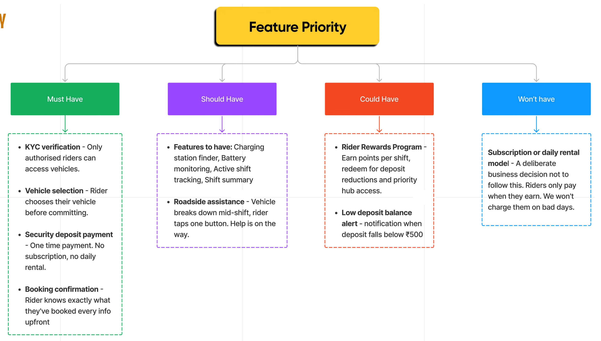
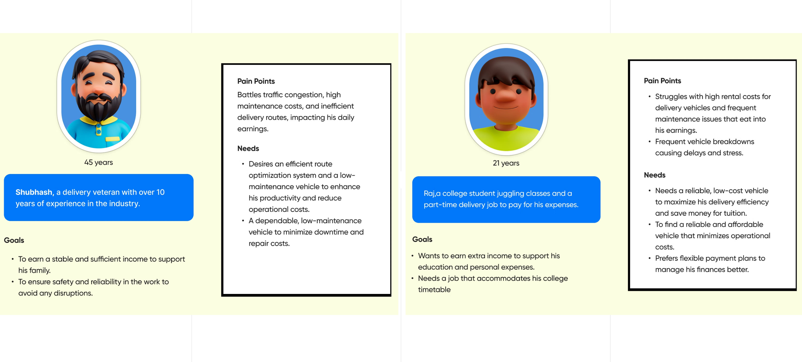
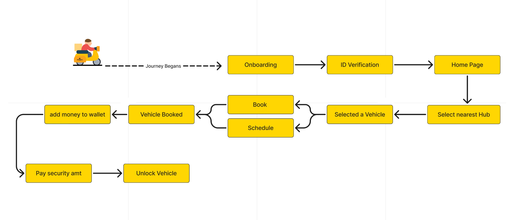
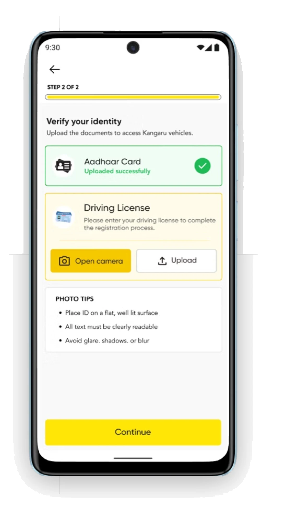
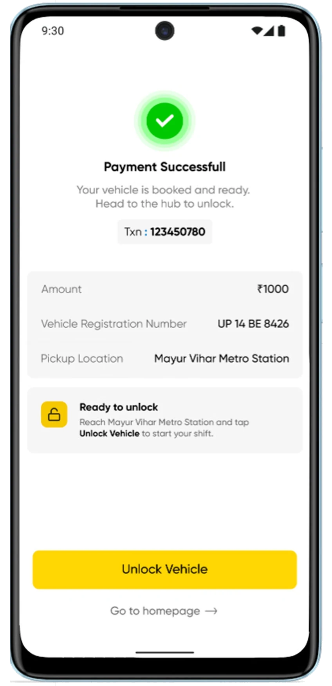
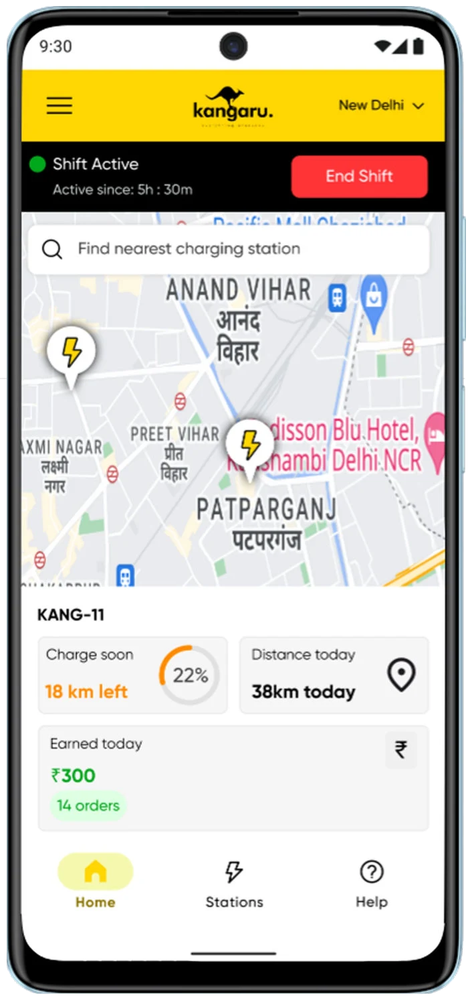
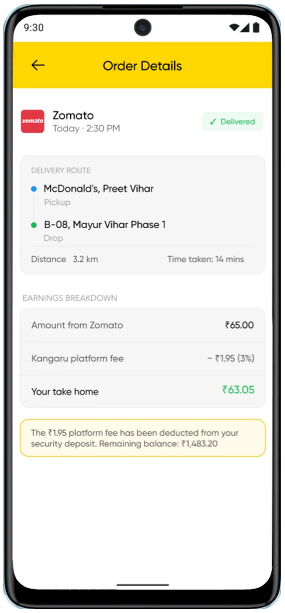
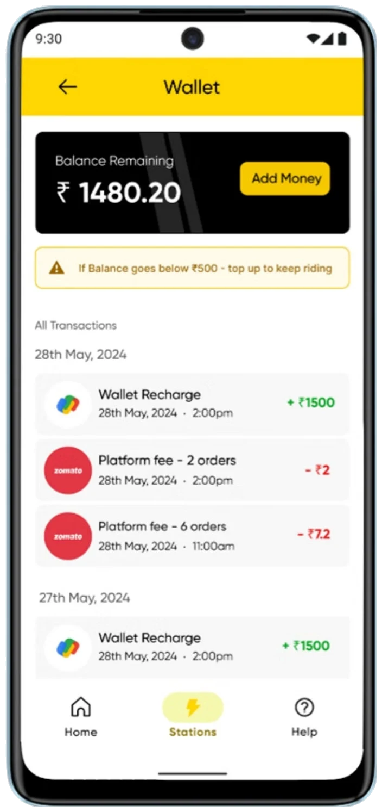

A smarter way to power last-mile delivery.
Kangaru is an EV-powered last-mile delivery platform that owns and operates its fleet, combining vehicles, technology, and operations to enable faster, cleaner and more reliable deliveries across cities.
From software to a fleet
An opportunity, a thesis, a ceiling and a pivot
We saw an opportunity to build the software that could make an EV rider’s day easier.
EV adoption in last-mile delivery was growing fast, but most of the attention was on vehicles, batteries and charging infrastructure.
Earnings
No single view of what riders were earning across delivery platforms.
Charging
No EV-specific guidance for finding chargers, planning range or understanding charging time.
Vehicle health
Limited visibility into battery and vehicle health.
Fleet companies would buy it & their riders would use it.
We would own the software layer of an industry that was growing fast but thinking about hardware first.
Everyone built the vehicle. We built what runs on top.
EV adoption was accelerating, but the market was still focused on hardware. We saw an opportunity to own the software layer.
Market gap
Vehicles, batteries and charging infrastructure dominated the category.
Software layer
We focused on charging behavior, battery anxiety, earnings and route efficiency.
B2B model
Fleet companies would buy the software; their riders would use it every day.
V1 thesis: own the software layer of a hardware-first industry.
The product had a ceiling.
We were just seeing how far we can go with our assumptions.
It wouldn’t scale
Software sold to fleet companies was limited by the size of the fleet market.
We were one decision away from irrelevance
A fleet could eventually build similar software in-house, leaving us with little ownership of the experience.
Distribution was the bottleneck
We depended on fleet companies to bring riders onto the product, making growth dependent on a long B2B sales cycle.
We always knew software alone wasn’t enough. V1 got us to the door. Investment opened it.
The direction changed when the investments came in and we would now own the fleet directly.
We kept building and started looking for investment.
Not because V1 was failing, but because we knew what was possible with the right backing.
Investment validated our belief
It confirmed the market for EV fleets was bigger, faster growing, and had far fewer players.
A bigger opportunity became clear
It wasn’t selling software to vehicle owners. It was owning the vehicles ourselves and building the software on top of it.
We shifted our direction
With the backing in place, we moved to building and owning our own EV fleet.
The direction shifted but the design problems stayed the same.
Ownership
V1
Initially, fleet companies like Yulu, Baaz owned the vehicles. We sold them software.
V2
But in V2, Kangaru owned the fleet directly.
Relationship
V1
Initially, the rider only used our software.
V2
In V2, the rider opened the Kangaru app and knew exactly who they were working with.
Revenue
V1
In V1, we charged fleet companies a monthly subscription.
V2
In V2, we earned 3% per delivery directly from the rider’s earnings.
Brand
V1
In V1, Kangaru was invisible.
V2
In V2, Kangaru became the face of the experience.
Designing the rider experience
Competitors, a pricing principle, the rider and the flow
Competitor analysis

There are bad days. Days with no deliveries, no gigs, nothing. Every competitor charges riders anyway.
We decided early on — if a rider doesn’t earn, we don’t earn. No delivery, no fee.

User persona

User flow

The screens
The reasoning behind each step of the rider journey
Getting a rider verified was more important than getting them in fast
Before accessing a vehicle — we had to know who they were.
- Progress bar on KYC — Triggers the Goal Gradient Effect. Closer they feel to finishing, more likely they complete it.
- Instructions before capture — Rider knows what a good photo looks like before they take it. Reduces bad submissions.
- One screen with three decisions. The goal was to get them verified, not frustrated.
- Camera or upload — KYC just needs a valid ID. Forcing live capture for a static document adds friction with no benefit.

Rider opens the app, nearest hub is Auto-selected
Finding a hub shouldn’t require thinking. Map loads first — not a list, not a search prompt.
- Map over list — Humans think spatially. Seeing hubs on a map is faster than reading through a list to figure out which one is closest.
- The faster a rider finds a hub, the faster they start earning. Every second of friction here costs them money.
- Hub card shows what matters — Distance, time, and vehicle count visible before the rider taps anything. Rider knows how many vehicles are ready.
- Hubs with one clear action — Each card has one CTA. Rider picks the hub closest to them and moves forward.
Rider reached the hub, now they just have to pick-up their vehicle
Rider has the freedom to choose which vehicle to go with.
Took me a while to figure out — too many CTAs on one screen isn’t giving users choice, it’s giving them confusion.
- Available/Charging badge — Rider sees instantly which vehicles can be booked. No guessing.
- Ghost button on charging vehicles — Charging card shows a disabled state. Rider understands it’s unavailable without us hiding it.
- CTA on every card — Rider doesn’t need to select first and then confirm. They see a vehicle they like, they book it directly. One less tap.
The business model made visible through design
Riders have been burned by hidden fees before. This screen had one job — remove that fear before they pay.
- “Pay once, top up only when needed” — First thing they see before the amount, before anything else.
- Payment breakdown over a single total — Rider understands exactly what they’re paying for. No surprises.
- Most apps hide the cost until the last moment. We led with transparency. That was the decision.
- Refund message before the amount — Rider knows their remaining balance comes back when they exit.
- Black total row — Visual weight on the total creates a moment of clarity. Rider sees the number clearly before committing.
Payment done. Rider needs to know what happens next.
Most confirmation screens stop at “payment successful.” We didn’t.
I used to think confirmation screens were the end. They’re actually the beginning of the next step.
- Transaction ID upfront — Rider has proof of payment the moment it goes through. No hunting for it later if something goes wrong.
- All details in one place — Vehicle, pickup time, location, amount. Rider doesn’t have to go back and check what they booked.
- “Ready to unlock” hint — Tells the rider exactly what to do next. Without it, they’d close the app and wonder where to go.

Other screens


